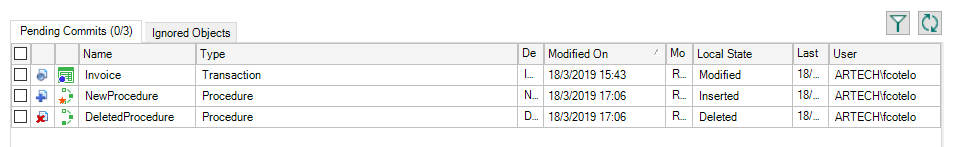

IDE Icon overlay
This article describes the icon overlays that the IDE shows associated with objects in several dialogs. These icon overlays help you to identify the state or other important characteristics of an object.
Icon overlay for Team Development
When working with GeneXus Server, the IDE offers the possibility of adding objects status indicators with respect to the KB's server. For example, identifying in the KB Explorer, which of the objects were modified locally (they are pending for commit); new objects and so on.
To identify these states, the standard object icon contains an icon overlay for those Knowledge Bases connected to a GeneXus Server instance.
Working without locks (Standard mode)
 |
Those objects which were modified locally (pending for commit) add a full blue circle in the bottom left corner of the object icon. |
| New objects add a full orange asterisk on the same location of the object icon. | |
 |
Objects in Conflict add a red triangle in the bottom left corner of the object icon, and change the font color to red. |
Working with locks
 |
In these cases, a further distinction is made. The locked object (with no edition) adds an empty blue circle on the object's icon. |
 |
After the object is modified; the new object state is locked and pending for commit (edited); the icon overlay changes from an empty blue circle to a full blue one. |
 |
When the object is force edited (with no edition); it adds an empty red circle on the object's icon. |
| For those cases when the object is force edited and pending for commit (edited), a full red circle is added to the object's icon. |
Considerations
All icons are overlayed in the bottom left corner. The hints are displayed wherever the object icon type is displayed. The following sample details the commit dialog with a new, deleted and modified object.

Icon overlay for Modularization
Showing Object's visibility in KB Explorer or other tool windows helps to identify objects that are private, internal, or public
Specifically, a heart is shown when the object's visibility is internal, and a padlock when it's private.
In the sample below, the BL module is internal, Customer is private, Core and GetCustomer are public:
| Backlinks | |
| IDE Icon overlay (GeneXus 17 Upgrade 7) | IDE Icons |